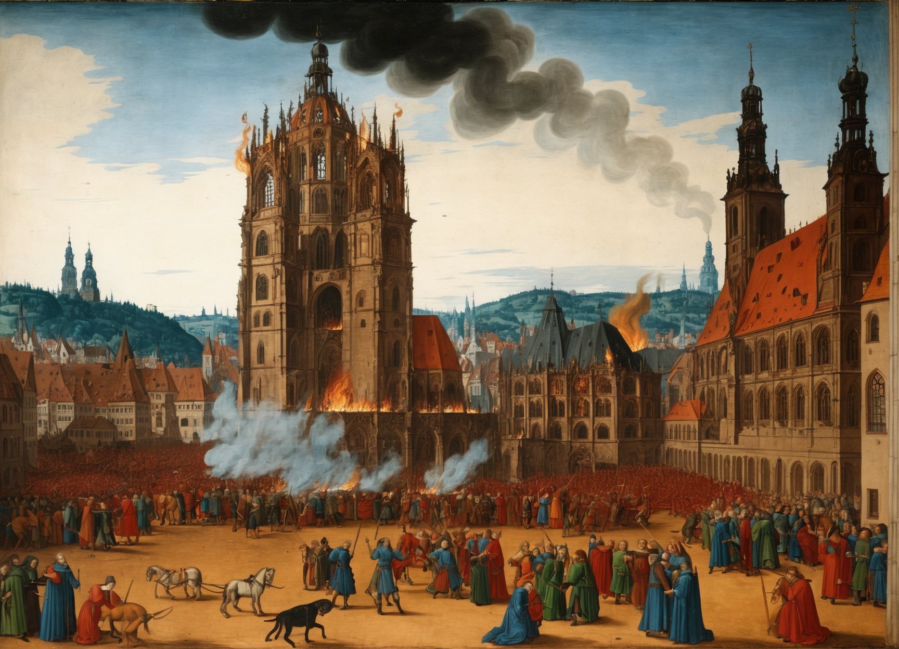
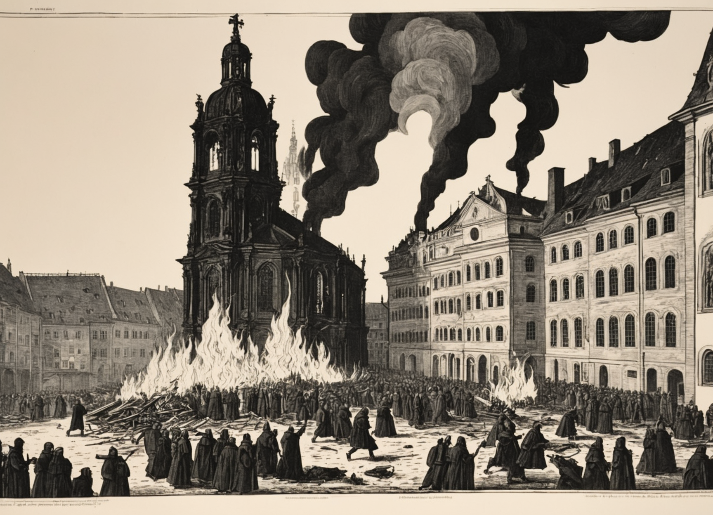
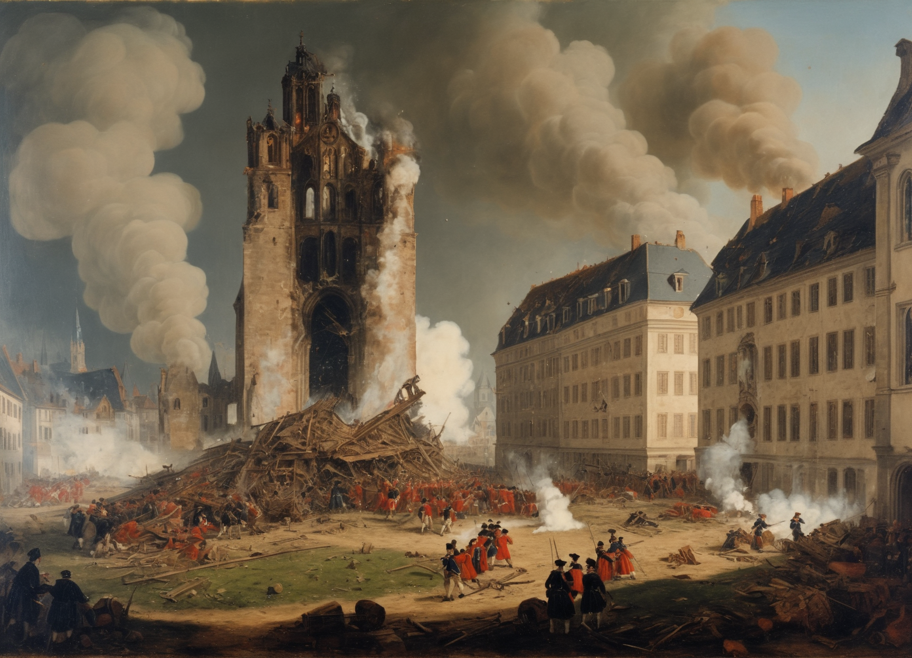
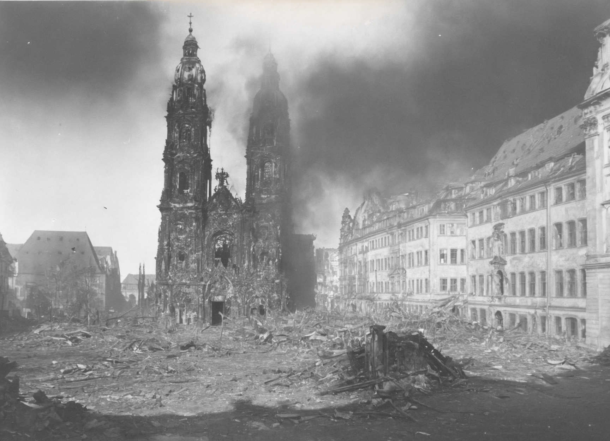
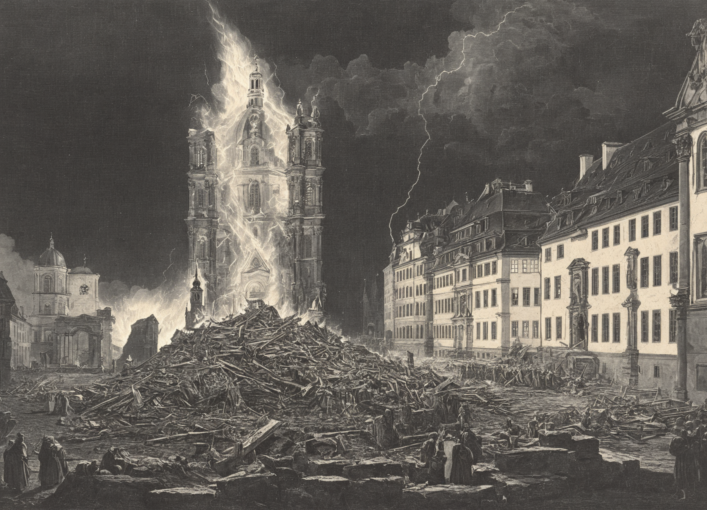
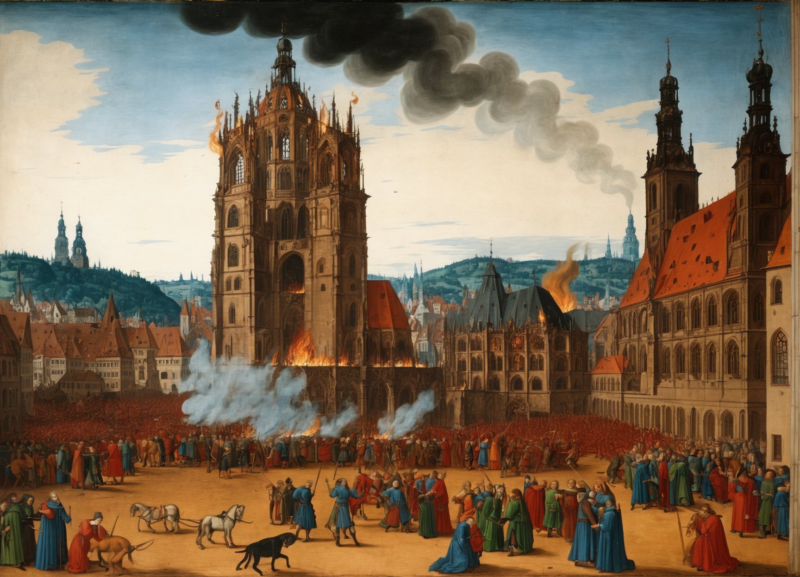
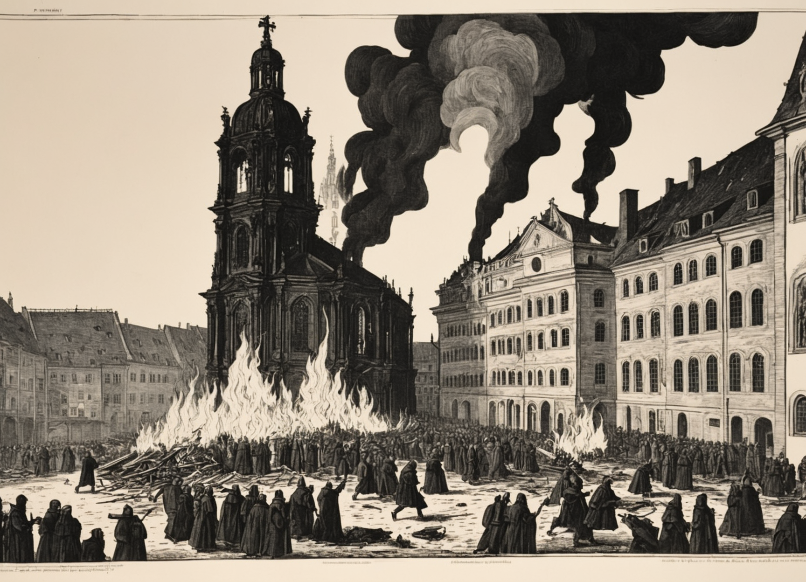
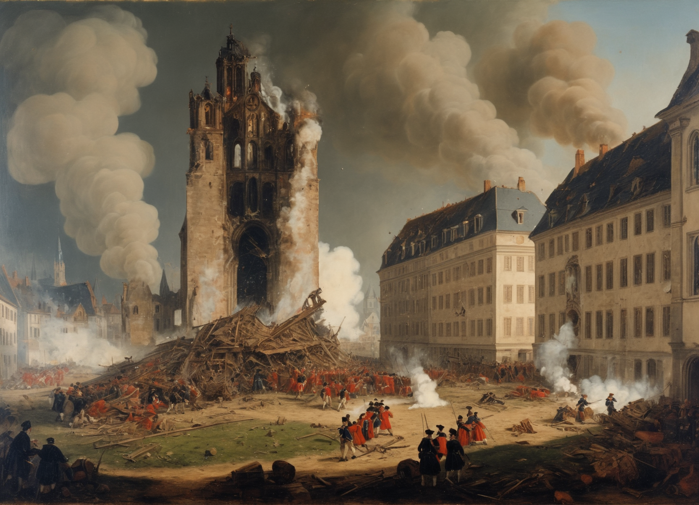
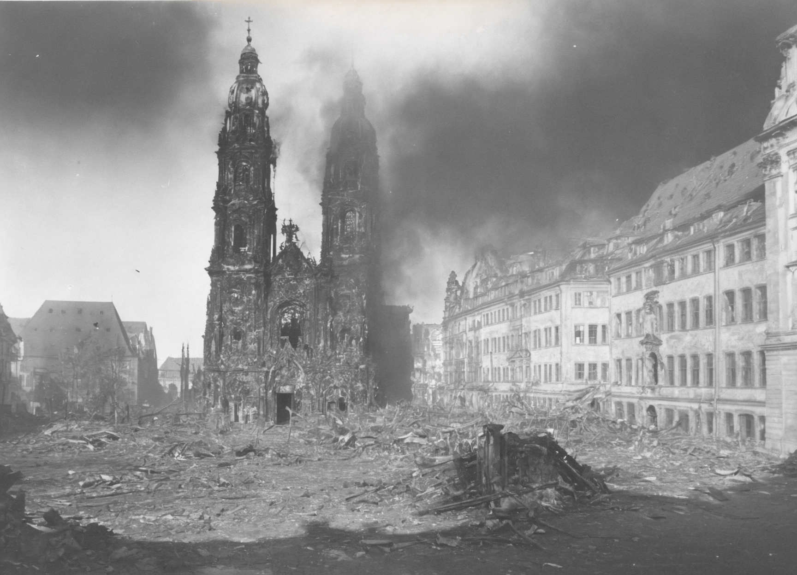
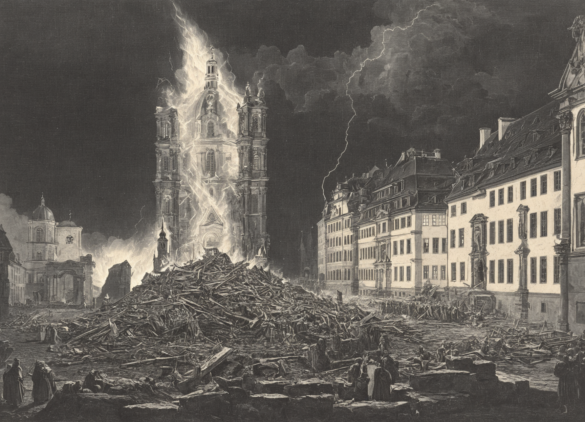

Findet ihr alle Kl-Kuriositäten?
Die Proportionen und Wände der ursprünglich gotischen Hallenkirche wirken hier verzerrt und surreal.
Surrealistische Architektur
Die Proportionen und Wände der ursprünglich gotischen Hallenkirche wirken hier verzerrt und surreal. Wie wohl der Grundriss von dieser bizarren Kirche aussehen würde?
Rauchender Turm
Was mag wohl im Turm im Hintergrund passieren? Als wir das Bild generierten, wurde der KI gesagt, dass ein Stadtbrand dargestellt werden soll – aber anscheinend hat sie noch nicht ganz verstanden, wie Rauch entsteht...
Mystische Kreatur
Was für ein seltsames Tier hier neben den winzigen Pferden entstanden ist, wissen wir auch nicht...
Vielleicht ist es eine ausgestorbene Art oder eine Phantasie-Kreatur die es nur im KI-Mittelalter gibt?